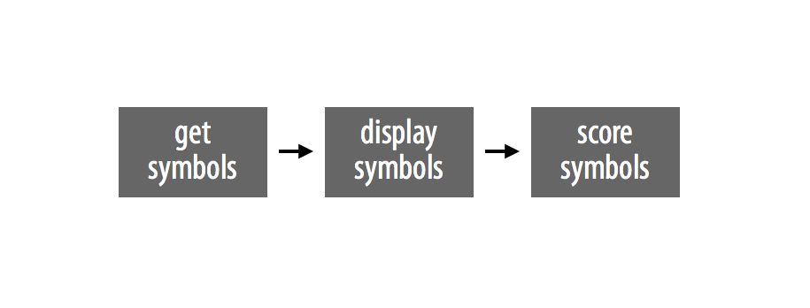
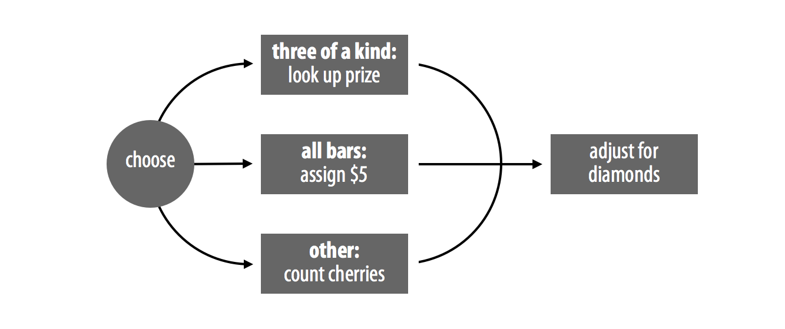
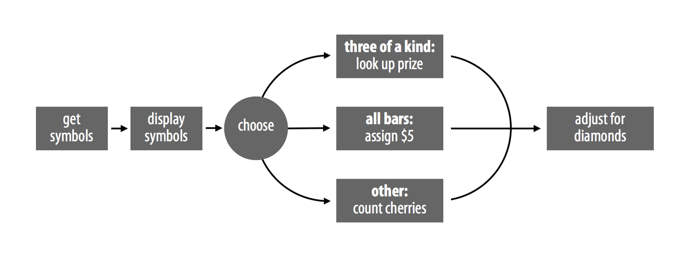
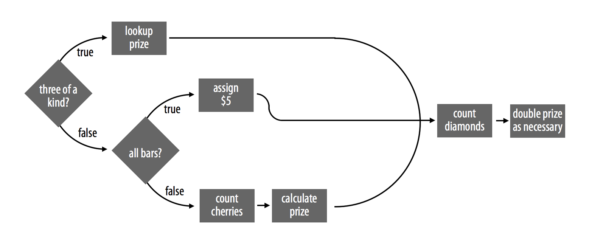

8 プログラム
この章では、Rの関数を実行して遊ぶことができる、実際に動作するスロットマシンを構築します。完成すると、以下のようにプレイできるようになります。
play()
## 0 0 DD
## $0
play()
## 7 7 7
## $80play 関数は2つのことを行う必要があります。第一に、3つの記号をランダムに生成すること。第二に、それらの記号に基づいて賞金を計算することです。
最初のステップは簡単にシミュレートできます。プロジェクト1：重み付けされたサイコロで2つのサイコロをランダムに「振った」ときと同じように、sample 関数を使って3つの記号をランダムに生成できます。以下の関数は、一般的なスロットマシンの記号のグループ（ダイヤモンド（DD）、7（7）、トリプルバー（BBB）、ダブルバー（BB）、シングルバー（B）、チェリー（C）、ゼロ（0））から3つの記号を生成します。記号はランダムに選択され、各記号は異なる確率で出現します。
get_symbols <- function() {
wheel <- c("DD", "7", "BBB", "BB", "B", "C", "0")
sample(wheel, size = 3, replace = TRUE,
prob = c(0.03, 0.03, 0.06, 0.1, 0.25, 0.01, 0.52))
}get_symbols を使って、スロットマシンで使用する記号を生成できます。
get_symbols()
## "BBB" "0" "C"
get_symbols()
## "0" "0" "0"
get_symbols()
## "7" "0" "B"get_symbols は、カナダのマニトバ州にあるビデオ・ロッタリー・ターミナルのグループで観察された確率を使用しています。これらのスロットマシンは、ある記者が還元率をテストしようとした1990年代に一時的な論争の的となりました。製造元が1ドルあたり92セントを払い出すと主張していたにもかかわらず、そのマシンは40セントしか払い出していないように見えたのです。マシンについて収集された元のデータと論争の説明は、W. John Braunによるジャーナル記事でオンライン公開されています。その後、追加のテストによって製造元が正しかったことが証明され、論争は沈静化しました。
マニトバのスロットマシンは、Table 8.1 に示す複雑な配当体系を使用しています。プレイヤーは以下の場合に賞金を獲得します。
- 3つの同じ種類の記号が揃った場合（3つのゼロを除く）
- 3つのバー（種類が混ざっていても良い）が揃った場合
- 1つ以上のチェリーがある場合
それ以外の場合、プレイヤーの賞金はゼロです。
賞金の金額は記号の正確な組み合わせによって決定され、さらにダイヤモンドの有無によって修正されます。ダイヤモンドは「ワイルドカード」として扱われます。つまり、プレイヤーの賞金が増えるのであれば、他のどの記号としても扱えることを意味します。例えば、7 7 DD を出したプレイヤーは、3つの「7」が揃ったとして賞金を得られます。ただし、このルールには1つの例外があります。プレイヤーが本物のチェリーを少なくとも1つ持っていない限り、ダイヤモンドをチェリーとして扱うことはできません。これにより、0 DD 0 のようなハズレのロールが 0 C 0 としてスコア計算されるのを防いでいます。
ダイヤモンドは別の意味でも特別です。組み合わせの中に現れるダイヤモンド1つにつき、最終的な賞金の額が2倍になります。したがって、7 7 DD は実際には 7 7 7 よりも高くスコア計算されます。3つの「7」なら80ドルですが、2つの「7」とダイヤモンド1つなら160ドルになります。7が1つとダイヤモンドが2つならさらに良く、賞金が2回倍増して320ドルになります。ジャックポットは、プレイヤーが DD DD DD を出したときに発生します。このとき、プレイヤーは100ドルが3回倍増された額、すなわち800ドルを獲得します。
DD）はワイルドであり、ダイヤモンド1つにつき最終的な賞金が2倍になります。* = 任意の記号。
| 組み合わせ | 賞金($) |
|---|---|
DD DD DD |
100 |
7 7 7 |
80 |
BBB BBB BBB |
40 |
BB BB BB |
25 |
B B B |
10 |
C C C |
10 |
| バーの任意の組み合わせ | 5 |
C C * |
5 |
C * C |
5 |
* C C |
5 |
C * * |
2 |
* C * |
2 |
* * C |
2 |
play 関数を作成するには、get_symbols の出力を受け取り、Table 8.1 に基づいて正しい賞金を計算するプログラムを書く必要があります。
Rでは、プログラムはRスクリプトまたは関数として保存されます。ここでは、あなたのプログラムを score という名前の関数として保存します。完成すれば、以下のように score を使って賞金を計算できるようになります。
score(c("DD", "DD", "DD"))
## 800その後、以下のように完全なスロットマシンを作成するのは簡単です。
play <- function() {
symbols <- get_symbols()
print(symbols)
score(symbols)
}
Note
print コマンドは出力をコンソールウィンドウに表示します。これにより、print は関数の本体内部からメッセージを表示するための便利な方法となります。
play が新しい関数 print を呼び出していることに気づくかもしれません。これは、3つのスロットマシン記号が関数の最後の行で返されないため、それらを表示するのに役立ちます。print コマンドは、Rが関数の内部から呼び出した場合でも、その出力をコンソールウィンドウに表示します。
プロジェクト1：重み付けされたサイコロにおいて、すべてのRコードはコードを作成・保存できるテキストファイルであるRスクリプトに書くことをお勧めしました。そのアドバイスは、この章を進める上で非常に重要になります。RStudioでRスクリプトを開くには、メニューバーの File > New File > R Script をクリックしてください。
8.1 戦略
スロットマシンの結果をスコア計算するのは複雑なタスクであり、複雑なアルゴリズムを必要とします。このタスクや他のコーディングタスクは、以下のシンプルな戦略を用いることで容易になります。
- 複雑なタスクを単純なサブタスク（Subtask）に分解する。
- 具体的な例を使用する。
- 解決策を英語（または日本語）で記述してから、それをRに変換する。
まずは、プログラムを作業しやすいサブタスクに分割する方法を見ていきましょう。
プログラムとは、コンピュータが従うべき一連のステップバイステップの指示です。それらをまとめると非常に高度なことを成し遂げるかもしれませんが、分解してみれば、個々のステップは単純で明快なものであるはずです。
プログラム内の個々のステップやサブタスクを特定することで、コーディングを容易にできます。その後、各サブタスクに個別に着手できます。もしサブタスクが複雑に見えるなら、それをさらに単純なサブタスクに分割してみてください。Rのプログラムは、既存の関数で実行できるほど単純なサブタスクにまで還元できることがよくあります。
Rのプログラムには、**逐次的なステップ（Sequential steps）と並列的なケース（Parallel cases）**という2種類のサブタスクが含まれます。
8.1.1 逐次的なステップ
プログラムを細分化する一つの方法は、一連の逐次的なステップに分けることです。play 関数はこのアプローチを取っており、図 Figure 8.1 に示されています。まず3つの記号を生成し（ステップ1）、次にそれらをコンソールウィンドウに表示し（ステップ2）、最後にそれらをスコア計算します（ステップ3）。
play <- function() {
# ステップ 1: 記号を生成する
symbols <- get_symbols()
# ステップ 2: 記号を表示する
print(symbols)
# ステップ 3: 記号をスコア計算する
score(symbols)
}Rにステップを順番に実行させるには、Rスクリプトまたは関数の本体の中にステップを次々に配置します。
8.1.2 並列的なケース
タスクを分割するもう一つの方法は、タスク内にある類似したケースのグループを見つけることです。タスクによっては、入力のグループごとに異なるアルゴリズムが必要な場合があります。それらのグループを特定できれば、一度に1つずつアルゴリズムを組み立てることができます。
例えば、score は、symbols に3つの同じ記号（3 of a kind）が含まれている場合に、ある方法で賞金を計算する必要があります（その場合、score は共通の記号を賞金に対応させる必要があります）。また、記号がすべてバー（BAR）である場合には、別の方法で賞金を計算する必要があります（その場合、score は単に5ドルの賞金を割り当てることができます）。そして最後に、記号に3つの同じ種類や、すべてバーが含まれていない場合、3番目の方法で賞金を計算する必要があります（その場合、score は存在するチェリーの数を数える必要があります）。score はこれら3つのアルゴリズムを同時に使うことは決してありません。記号の組み合わせに基づいて、実行すべきアルゴリズムを常に1つだけ選択します。
ダイヤモンドはワイルドカードとして扱われるため、これらすべてを複雑にします。差し当たり、ダイヤモンドが賞金を2倍にするがワイルドではないという単純なケースに集中しましょう。score は、図 Figure 8.2 に示すように、以下のアルゴリズムのいずれかを実行した後に、必要に応じて賞金を2倍にすることができます。
play のステップに score のケースを加えると、図 Figure 8.3 に示すように、完全なスロットマシンプログラムの戦略が明らかになります。
私たちはこの戦略の最初の数ステップをすでに解決しています。プログラムは get_symbols 関数で3つのスロットマシン記号を取得できます。次に print 関数で記号を表示できます。では、プログラムが並列の score ケースをどのように処理できるかを見ていきましょう。


8.2 if 文
ケースを並列にリンクさせるには、少し構造が必要です。プログラムは、ケースを選択しなければならないときに常に分かれ道に直面します。if 文（イフ文）を使えば、プログラムがこの分かれ道を進むのを助けることができます。
if 文は、特定のケースに対して特定のタスクを実行するようRに伝えます。日本語（あるいは英語）では「もしこれが真なら、あれをせよ」と言うでしょう。Rでは次のように書きます。
if (this) {
that
}this オブジェクトは、論理テスト、または単一の TRUE か FALSE に評価されるRの式である必要があります。もし this が TRUE に評価されれば、Rは if 文に続く中括弧の間（つまり { と } の間）にあるすべてのコードを実行します。もし this が FALSE に評価されれば、Rは中括弧の間のコードを実行せずにスキップします。
例えば、あるオブジェクト num が確実に正の数になるようにする if 文を書くことができます。
if (num < 0) {
num <- num * -1
}もし num < 0 が TRUE であれば、Rは num にマイナス1を掛け、それによって num は正の数になります。
num <- -2
if (num < 0) {
num <- num * -1
}
num
## 2もし num < 0 が FALSE であれば、Rは何もしないので、num は正の数（またはゼロ）のままです。
num <- 4
if (num < 0) {
num <- num * -1
}
num
## 4if 文の条件は、単一の TRUE または FALSE に評価される必要があります。もし条件が（思っているよりも簡単に作成できてしまう） TRUE と FALSE のベクトルを作成した場合、if 文は警告メッセージを表示し、ベクトルの最初の要素のみを使用します。論理値のベクトルは、any や all といった関数を使って、単一の TRUE または FALSE に凝縮できることを思い出してください。
if 文はコード1行に限定する必要はありません。中括弧の間には好きなだけ多くの行を含めることができます。例えば、以下のコードは多くの行を使って num を正の数にします。もし num が負の数から始まった場合、追加された行はいくつかの情報メッセージを表示します。もし num が正の数から始まった場合、Rはコードブロック全体（print 文なども含めて）をスキップします。
num <- -1
if (num < 0) {
print("num is negative.")
print("Don't worry, I'll fix it.")
num <- num * -1
print("Now num is positive.")
}
## "num is negative."
## "Don't worry, I'll fix it."
## "Now num is positive."
num
## 1if 文への理解を深めるために、以下のクイズを試してみてください。
練習問題：クイズA
これは何を返すでしょうか？
x <- 1 if (3 == 3) { x <- 2 } x
解答例 このコードは数値の2を返します。
xは1として始まり、その後Rはif文に遭遇します。条件がTRUEと評価されるため、Rはx <- 2を実行し、xの値を変更します。
練習問題：クイズB
これは何を返すでしょうか？
x <- 1 if (TRUE) { x <- 2 } x
解答例 このコードも数値の2を返します。この文の条件は最初から
TRUEである点を除けば、クイズAのコードと同じように動作します。Rはそれを評価する必要さえありません。その結果、if文の内部のコードが実行され、xは2に設定されます。
練習問題：クイズC
これは何を返すでしょうか？
x <- 1 if (x == 1) { x <- 2 if (x == 1) { x <- 3 } } x
解答例 今回も、コードは数値の2を返します。
xはまず1として始まり、最初のif文の条件がTRUEに評価されるため、Rはif文の本体のコードを実行します。まず、Rはxを2に設定し、次に最初のif文の本体にある2番目のif文を評価します。このとき、xは現在2であるため、x == 1はFALSEと評価されます。その結果、Rはx <- 3を無視し、両方のif文を抜けます。
8.3 else 文
if 文は条件が「真」のときに何をすべきかをRに伝えますが、条件が「偽」のときに何をすべきかを伝えることもできます。else（エルス）は if の対になるもので、if 文を拡張して2番目のケースを含めることができます。日本語では「もしこれが真ならプランAをせよ、さもなくばプランBをせよ」と言うでしょう。Rでは次のように書きます。
if (this) {
Plan A
} else {
Plan B
}this が TRUE に評価されるとき、Rは最初の括弧内のコードを実行し、2番目の括弧内は実行しません。this が FALSE に評価されるとき、Rは2番目の括弧内のコードを実行し、最初の括弧内は実行しません。この構成を使えば、考えられるすべてのケースをカバーできます。例えば、小数を最も近い整数に四捨五入（または切り上げ・切り下げ）するコードを書くことができます。
小数から始めます。
a <- 3.14次に trunc を使って、整数の成分だけを分離します。
dec <- a - trunc(a)
dec
## 0.14
Note
trunc は数値を受け取り、小数点の左側に現れる部分（すなわち、数値の整数部分）のみを返します。
Note
a - trunc(a) は、a の小数部分を返す便利な方法です。
次に if else ツリーを使って数値を（切り上げ、または切り下げて）丸めます。
if (dec >= 0.5) {
a <- trunc(a) + 1
} else {
a <- trunc(a)
}
a
## 3もし、排他的なケースが3つ以上ある場合は、else の直後に新しい if 文を追加することで、複数の if 文と else 文を連結できます。例えば以下のようになります。
a <- 1
b <- 1
if (a > b) {
print("A wins!")
} else if (a < b) {
print("B wins!")
} else {
print("Tie.")
}
## "Tie."Rは、条件の1つが TRUE と評価されるまで if 条件を順番に見ていき、その後、ツリー内の残りの if および else 句を無視します。どの条件も TRUE と評価されなかった場合、Rは最後の else 文を実行します。
もし2つの if 文が互いに排他的なイベントを記述しているのであれば、それらを別々に列挙するよりも、else if でつなげる方が優れています。これにより、最初の文が TRUE を返したときには常にRが2番目の if 文を無視できるようになり、作業が節約されます。
if と else を使って、スロットマシン関数のサブタスクをリンクさせることができます。新しいRスクリプトを開き、このコードをコピーしてください。このコードは、最終的な score 関数のスケルトン（骨組み）になります。これを図 Figure 8.2 の score のフローチャートと比較してみてください。
if ( # ケース 1: すべて同じ <1>) {
prize <- # 賞金をルックアップする <3>
} else if ( # ケース 2: すべてバー <2> ) {
prize <- # 5ドルを割り当てる <4>
} else {
# チェリーを数える <5>
prize <- # 賞金を計算する <7>
}
# ダイヤモンドを数える <6>
# 必要に応じて賞金を2倍にする <8>このスケルトンはかなり不完全であり、多くのセクションは本物のコードではなくコードコメントにすぎません。しかし、プログラムを8つの単純なサブタスクに還元できました。
<1> - 記号が3つ揃い（3 of a kind）かどうかをテストする。 <2> - 記号がすべてバー（BAR）かどうかをテストする。 <3> - 揃った記号に基づいて、3つ揃いの賞金をルックアップ（検索）する。 <4> - 5ドルの賞金を割り当てる。 <5> - チェリーの数を数える。 <6> - ダイヤモンドの数を数える。 <7> - チェリーの数に基づいて賞金を計算する。 <8> - ダイヤモンドに合わせて賞金を調整する。
もしよろしければ、図 Figure 8.4 に示すように、これらのタスクを中心にフローチャートを再構成できます。このチャートは同じ戦略を記述していますが、より正確な方法になっています。if else の決定をシンボル化するために、ひし形を使用します。

これで、一度に1つのサブタスクに取り組み、進みながら if ツリーにRコードを追加していくことができます。具体的な例を用意し、Rでコーディングする前に解決策を日本語で記述するようにすれば、各サブタスクの解決は容易になるはずです。
最初のサブタスクは、記号が3つ揃いかどうかをテストすることです。このサブタスクのコードを書き始めるにはどうすればよいでしょうか？
最終的な score 関数が以下のようになることはわかっています。
score <- function(symbols) {
# 賞金を計算する
prize
}その引数である symbols は、get_symbols の出力であり、3つの文字列を含むベクトルになります。私が今書いたように、score という名前のオブジェクトを定義して、それから関数の本体を少しずつ埋めていくことで score を書き始めることもできます。しかし、それはあまり良い考えではありません。最終的な関数には8つの個別のパーツがあり、それらすべてのパーツが書かれ（かつ、それら自体が正しく動作し）ない限り、正しく動作しません。つまり、いずれかのサブタスクをテストできるようになる前に、score 関数全体を書き上げなければならないことになります。もし score が動作しなかった場合（その可能性は非常に高いです）、どのサブタスクに修正が必要なのかがわかりません。
一度に1つのサブタスクに集中することで、時間と頭痛を節約できます。各サブタスクについて、コードをテストできる具体的な例を作成してください。例えば、score が3つの文字列を含む symbols という名前のベクトルに対して動作する必要があることはわかっています。もし本物のベクトル symbols を作れば、進みながら多くのサブタスクのコードをそのベクトルに対して実行できます。
symbols <- c("7", "7", "7")もしコードの一部が symbols に対して動作しなければ、先に進む前にそれを修正する必要があることがわかります。状況が変わるたびに symbols の値を変更して、あらゆる状況でコードが動作することを確認できます。
symbols <- c("B", "BB", "BBB")
symbols <- c("C", "DD", "0")各サブタスクが具体的な例に対して動作するようになった後にのみ、サブタスクを1つの score 関数に統合してください。この計画に従えば、関数がなぜ動かないのかを突き止めることに費やす時間は減り、関数を使うことにもっと時間を割けるようになるでしょう。
具体的な例を設定した後は、そのサブタスクを日本語でどのように行うか記述してみてください。解決策をより正確に記述できれば、Rコードを書くのはそれだけ簡単になります。
私たちの最初のサブタスクは、「記号が3つ揃いかどうかをテストする」ことです。このフレーズ自体は、Rコードとしての実用的な示唆をあまり与えません。しかし、3つ揃いに対するより正確なテストを記述することはできます。「3つの記号が同じになるのは、1番目の記号が2番目と等しく、かつ2番目の記号が3番目と等しいとき」です。あるいは、さらに正確に言えば、以下のようになります。
「symbols という名前のベクトルに3つの同じ記号が含まれるのは、symbols の1番目の要素が symbols の2番目の要素と等しく、かつ symbols の2番目の要素が symbols の3番目の要素と等しいときである。」
練習問題：テストを書く
前述の記述を、Rで書かれた論理テストに変換してください。Rの記法（R Notation）で学んだ論理テスト、ブール演算子、およびサブセット作成（抽出）の知識を活用してください。このテストはベクトル
symbolsに対して動作し、symbolsの各要素が同じである場合、かつその場合に限りTRUEを返すようにする必要があります。必ずsymbolsに対してコードをテストしてください。
解答例
symbolsに3つの同じ記号が含まれていることをテストする方法はいくつかあります。最初の方法は上記の日本語の提案と並行していますが、他にも同じテストを行う方法はあります。自分の解決策が動作する限り（作成したsymbolsベクトルに対して簡単に確認できます）、正解や不正解はありません。
symbols
## "7" "7" "7"
symbols[1] == symbols[2] & symbols[2] == symbols[3]
## TRUE
symbols[1] == symbols[2] & symbols[1] == symbols[3]
## TRUE
all(symbols == symbols[1])
## TRUER関数の語彙が広がるにつれて、基本的なタスクを行うより多くの方法を思いつくようになります。私が3つ揃いを確認するのに好んで使う方法の1つは、以下の通りです。
length(unique(symbols) == 1)unique 関数は、ベクトル内に現れるすべてのユニークな（一意な）項を返します。もし symbols ベクトルに3つ揃い（すなわち、3回出現する1つのユニークな項）が含まれていれば、unique(symbols) は長さ1のベクトルを返します。
動作するテストができたので、それをスロットマシンスクリプトに追加できます。
same <- symbols[1] == symbols[2] && symbols[2] == symbols[3]
if (same) {
prize <- # 賞金をルックアップする
} else if ( # ケース 2: すべてバー ) {
prize <- # 5ドルを割り当てる
} else {
# チェリーを数える
prize <- # 賞金を計算する
}
# ダイヤモンドを数える
# 必要に応じて賞金を2倍にする
Note
&& と || は & および | と同様に振る舞いますが、時としてより効率的です。ダブルの演算子は、最初のテストだけで結果が明らかな場合、ペアになっている2番目のテストを評価しません。例えば、次の式において symbols[1] が symbols[2] と等しくない場合、&& は symbols[2] == symbols[3] を評価しません。式全体に対して即座に FALSE を返すことができます（FALSE & TRUE も FALSE & FALSE も両方 FALSE に評価されるためです）。この効率性はプログラムを高速化できますが、ダブルの演算子はどこにでも適しているわけではありません。&& と || はベクトル化（Vectorized）されていないため、演算子の各側で単一の論理テストしか処理できません。
2番目の賞金ケースは、すべての記号が「バー」の種類であるとき（例えば B, BB, BBB）に発生します。まずは作業用の具体的な例を作成しましょう。
symbols <- c("B", "BBB", "BB")練習問題：すべてバーかどうかのテスト
Rの論理演算子とブール演算子を使用して、
symbolsという名前のベクトルにバーの種類の記号のみが含まれているかどうかを判断するテストを書いてください。例として作成したsymbolsベクトルでテストが機能するか確認してください。テストがどのように機能すべきか日本語で記述し、その後に解決策をRに変換することを忘れないでください。
解答例 Rの多くの事柄と同様に、
symbolsにすべてバーが含まれているかをテストする方法は複数あります。例えば、以下のように複数のブール演算子を使用した非常に長いテストを書くこともできます。
(symbols[1] == "B" | symbols[1] == "BB" | symbols[1] == "BBB") &
(symbols[2] == "B" | symbols[2] == "BB" | symbols[2] == "BBB") &
(symbols[3] == "B" | symbols[3] == "BB" | symbols[3] == "BBB")
## TRUEしかし、これはあまり効率的な解決策ではありません。Rは9つの論理テストを実行しなければならず（あなたもそれを入力しなければなりません）、複数の | 演算子は単一の %in% で置き換えられることが多いです。また、ベクトル内の各要素に対してテストが真であるかは all で確認できます。これら2つの変更により、前のコードは以下のように短縮されます。
all(symbols %in% c("B", "BB", "BBB"))
## TRUEこのコードをスクリプトに追加しましょう。
same <- symbols[1] == symbols[2] && symbols[2] == symbols[3]
bars <- symbols %in% c("B", "BB", "BBB")
if (same) {
prize <- # 賞金をルックアップする
} else if (all(bars)) {
prize <- 5
} else {
# チェリーを数える
prize <- # 賞金を計算する
}
# ダイヤモンドを数える
# 必要に応じて賞金を2倍にする私がこのテストを bars と all(bars) の2つのステップに分けたことに気づいたかもしれません。これは単に個人的な好みの問題です。可能な限り、関数名やオブジェクト名が何をしているかを伝えるようにコードを書き、読みやすくしたいと考えています。
また、ケース2に対するテストは、3つ揃いを含んでいるため、本来ケース1に該当すべきいくつかの記号も捉えてしまうことにお気づきかもしれません。
symbols <- c("B", "B", "B")
all(symbols %in% c("B", "BB", "BBB"))
## TRUEしかし、これは問題になりません。なぜなら、if ツリーの中でこれらのケースを else if でつなげているからです。Rは TRUE と評価されるケースに到達するとすぐに、ツリーの残りの部分をスキップします。このように考えてみてください。各 else は、「それ以前のどの条件も満たされていない場合に限り、それに続くコードを実行せよ」とRに伝えています。したがって、3つの同じ種類のバーがある場合、Rはケース1のコードを評価し、その後ケース2（およびケース3）のコードをスキップします。
次のサブタスクは、symbols に対する賞金を割り当てることです。symbols ベクトルに3つの同じ記号が含まれているとき、賞金は「何の3つ揃いか」によって決まります。3つの DD なら賞金は100ドル、3つの 7 なら80ドル、といった具合です。
これは別の if ツリーを示唆しています。以下のようなコードで賞金を割り当てることができます。
if (same) {
symbol <- symbols[1]
if (symbol == "DD") {
prize <- 800
} else if (symbol == "7") {
prize <- 80
} else if (symbol == "BBB") {
prize <- 40
} else if (symbol == "BB") {
prize <- 5
} else if (symbol == "B") {
prize <- 10
} else if (symbol == "C") {
prize <- 10
} else if (symbol == "0") {
prize <- 0
}
}このコードは動作しますが、書くのも読むのも少し長く、Rが正しい賞金を出すまでに複数の論理テストを実行しなければならない可能性があります。別の方法を使えば、より良く行うことができます。
8.4 ルックアップテーブル（Lookup Tables）
Rにおいて、何かを行う最もシンプルな方法は、サブセット作成（抽出）を伴うことが非常に多いです。ここではどのようにサブセット作成を利用できるでしょうか？記号と賞金の正確な関係はわかっているので、その情報を捉えたベクトルを作成できます。このベクトルには、記号を「名前（Names）」として保存し、賞金の値を「要素（Elements）」として保存できます。
payouts <- c("DD" = 100, "7" = 80, "BBB" = 40, "BB" = 25,
"B" = 10, "C" = 10, "0" = 0)
payouts
## DD 7 BBB BB B C 0
## 100 80 40 25 10 10 0これで、記号の名前でベクトルをサブセットすることで、任意の記号に対する正しい賞金を抽出できます。
payouts["DD"]
## DD
## 100
payouts["B"]
## B
## 10サブセット作成時に記号の名前を残したくない場合は、出力に対して unname 関数を実行できます。
unname(payouts["DD"])
## 100unname は、名前属性（names attribute）が削除されたオブジェクトのコピーを返します。
payouts は一種のルックアップテーブル（Lookup table）、すなわち値を検索するために使用できるRオブジェクトです。payouts をサブセットすることは、記号の賞金を見つけるためのシンプルな方法を提供します。コードの行数は少なくて済み、記号が DD であろうと 0 であろうと、実行される作業量は同じです。巧妙な方法でサブセットできる名前付きオブジェクトを作成することで、Rにルックアップテーブルを作成できます。
悲しいことに、この方法は完全には自動化されていません。Rに payouts の中のどの記号を検索すべきか伝える必要があります。……本当にそうでしょうか？もし payouts を symbols[1] でサブセットしたらどうなるでしょうか？試してみましょう。
symbols <- c("7", "7", "7")
symbols[1]
## "7"
payouts[symbols[1]]
## 7
## 80
symbols <- c("C", "C", "C")
payouts[symbols[1]]
## C
## 10検索すべき正確な記号を知る必要はありません。symbols の中にある記号を検索するようにRに伝えればよいからです。この場合、各要素に同じ記号が含まれているため、symbols[1], symbols[2], または symbols[3] でその記号を見つけることができます。これで、symbols に3つ揃いが含まれているときに賞金を計算する、シンプルな自動化された方法が手に入りました。これをコードに追加し、次にケース2を見てみましょう。
same <- symbols[1] == symbols[2] && symbols[2] == symbols[3]
bars <- symbols %in% c("B", "BB", "BBB")
if (same) {
payouts <- c("DD" = 100, "7" = 80, "BBB" = 40, "BB" = 25,
"B" = 10, "C" = 10, "0" = 0)
prize <- unname(payouts[symbols[1]])
} else if (all(bars)) {
prize <- # 5ドルを割り当てる
} else {
# チェリーを数える
prize <- # 賞金を計算する
}
# ダイヤモンドを数える
# 必要に応じて賞金を2倍にするケース2は、記号がすべてバーであるときに常に発生します。その場合、賞金は5ドルであり、割り当てるのは簡単です。
same <- symbols[1] == symbols[2] && symbols[2] == symbols[3]
bars <- symbols %in% c("B", "BB", "BBB")
if (same) {
payouts <- c("DD" = 100, "7" = 80, "BBB" = 40, "BB" = 25,
"B" = 10, "C" = 10, "0" = 0)
prize <- unname(payouts[symbols[1]])
} else if (all(bars)) {
prize <- 5
} else {
# チェリーを数える
prize <- # 賞金を計算する
}
# ダイヤモンドを数える
# 必要に応じて賞金を2倍にするこれで最後のケースに取り組むことができます。ここでは、賞金を計算する前に symbols の中にいくつのチェリーがあるかを知る必要があります。
練習問題：Cを見つける
symbolsという名前のベクトルのどの要素がCであるかをどのように判断すればよいでしょうか？テストを考案して試してみてください。
Note
チャレンジ symbols という名前のベクトルにある C の数を数えるにはどうすればよいでしょうか？Rの型変換（Coercion）ルールを思い出してください。
解答例 いつものように、実際の例で作業しましょう。
symbols <- c("C", "DD", "C")チェリーをテストする一つの方法は、記号のいずれかが C であるかどうかを確認することです。
symbols == "C"
## TRUE FALSE TRUEさらに便利なのは、記号の中にいくつのチェリーがあるかを数えることです。これは sum を使って行うことができます。sum は論理値ではなく数値の入力を期待します。これを知っているRは、合計を計算する前に TRUE と FALSE を 1 と 0 に変換（型変換）します。その結果、sum は TRUE の数、すなわちチェリーの数を返します。
sum(symbols == "C")
## 2同じ方法を使って symbols 内のダイヤモンドの数を数えることもできます。
sum(symbols == "DD")
## 1これら両方のサブタスクをプログラムのスケルトンに追加しましょう。
same <- symbols[1] == symbols[2] && symbols[2] == symbols[3]
bars <- symbols %in% c("B", "BB", "BBB")
if (same) {
payouts <- c("DD" = 100, "7" = 80, "BBB" = 40, "BB" = 25,
"B" = 10, "C" = 10, "0" = 0)
prize <- unname(payouts[symbols[1]])
} else if (all(bars)) {
prize <- 5
} else {
cherries <- sum(symbols == "C")
prize <- # 賞金を計算する
}
diamonds <- sum(symbols == "DD")
# 必要に応じて賞金を2倍にするケース3は if ツリーの中でケース1や2よりも下に現れるため、ケース3のコードは、3つ揃いや、すべてバーを持っていないプレイヤーにのみ適用されます。スロットマシンの配当体系によれば、これらのプレイヤーは、チェリーが2つなら5ドル、チェリーが1つなら2ドルを獲得します。プレイヤーにチェリーがなければ、賞金は0ドルになります。3つのチェリーについては、その結果がすでにケース1でカバーされているため、心配する必要はありません。
ケース1と同様に、チェリーの各組み合わせを処理する if ツリーを書くこともできますが、ケース1と同様に、これは非効率的な解決策になります。
if (cherries == 2) {
prize <- 5
} else if (cherries == 1) {
prize <- 2
} else {
prize <- 0
}ここでも、最善の解決策はサブセット作成を伴うものだと考えます。野心的な方は、この解決策をご自身で考えてみてください。しかし、以下の提案された解決策を頭の中でなぞるだけでも、同じくらい早く学ぶことができるでしょう。
チェリーがなければ賞金は0ドル、チェリーが1つなら2ドル、チェリーが2つなら5ドルになるべきであることはわかっています。この情報を含むベクトルを作成できます。これは非常にシンプルなルックアップテーブルになります。
c(0, 2, 5)さて、ケース1のように、ベクトルをサブセットして正しい賞金を取得できます。この場合、賞金は記号の名前によって識別されるのではなく、存在するチェリーの数によって識別されます。その情報は持っているでしょうか？はい、cherries に保存されています。先のルックアップテーブルから正しい賞金を得るために、基本的な整数のサブセット作成を使用できます。例えば c(0, 2, 5)[1] などです。
cherries はゼロを含む可能性があるため、そのまま整数のサブセット作成に適しているわけではありませんが、修正は簡単です。cherries + 1 でサブセットすればよいのです。これにより、cherries がゼロのときは以下のようになります。
cherries + 1
## 1
c(0, 2, 5)[cherries + 1]
## 0cherries が1のときは以下のようになります。
cherries + 1
## 2
c(0, 2, 5)[cherries + 1]
## 2そして、cherries が2のときは以下のようになります。
cherries + 1
## 3
c(0, 2, 5)[cherries + 1]
## 5これらの解決策を、チェリーの各数に対して正しい賞金を返していると納得できるまで検討してください。その後、以下のようにコードをスクリプトに追加します。
same <- symbols[1] == symbols[2] && symbols[2] == symbols[3]
bars <- symbols %in% c("B", "BB", "BBB")
if (same) {
payouts <- c("DD" = 100, "7" = 80, "BBB" = 40, "BB" = 25,
"B" = 10, "C" = 10, "0" = 0)
prize <- unname(payouts[symbols[1]])
} else if (all(bars)) {
prize <- 5
} else {
cherries <- sum(symbols == "C")
prize <- c(0, 2, 5)[cherries + 1]
}
diamonds <- sum(symbols == "DD")
# 必要に応じて賞金を2倍にする
Importantルックアップテーブル vs if ツリー
if ツリーを書くのを避けるためにルックアップテーブルを作成したのは、これで2回目です。なぜこのテクニックが役立ち、なぜ繰り返し登場するのでしょうか？Rにおける多くの if ツリーは不可欠です。それらは、ケースごとに異なるアルゴリズムを使用するようにRに伝えるための有用な方法を提供します。しかし、if ツリーはどこにでも適しているわけではありません。
if ツリーにはいくつかの欠点があります。第一に、ツリーを下る際、Rに複数のテストを実行させる必要があり、不必要な作業が発生する可能性があります。第二に、「速度（Speed）」で見るように、Rのプログラミングの強みを活かして高速なプログラムを作成するスタイルである「ベクトル化されたコード（Vectorized code）」において、if ツリーを使用するのは難しい場合があります。ルックアップテーブルは、これらの欠点のいずれにも悩まされません。
すべての if ツリーをルックアップテーブルに置き換えることはできませんし、そうすべきでもありません。しかし、通常、if ツリーを使った変数の割り当てを避けるためにルックアップテーブルを使用できます。一般的なルールとして、ツリーの各ブランチが異なるコードを実行する場合は if ツリーを使用してください。ツリーの各ブランチが異なる値を割り当てるだけの場合は、ルックアップテーブルを使用してください。
if ツリーをルックアップテーブルに変換するには、割り当てられる値を特定し、それらをベクトルに保存します。次に、if ツリーの条件で使用されている選択基準を特定します。もし条件が文字列を使用しているなら、ベクトルに名前を付け、名前ベースのサブセット作成を使用してください。もし条件が整数を使用しているなら、整数ベースのサブセット作成を使用してください。
最後のサブタスクは、存在するダイヤモンド1つにつき賞金を2倍にすることです。これは、最終的な賞金が現在の賞金のある倍数になることを意味します。例えば、ダイヤモンドがない場合、賞金は以下のようになります。
prize * 1 # 1 = 2 ^ 0ダイヤモンドが1つある場合、以下のようになります。
prize * 2 # 2 = 2 ^ 1ダイヤモンドが2つある場合、以下のようになります。
prize * 4 # 4 = 2 ^ 2そしてダイヤモンドが3つある場合、以下のようになります。
prize * 8 # 8 = 2 ^ 3これを処理する簡単な方法を思いつきますか？これらの例と似たようなものはどうでしょうか？
練習問題：ダイヤモンドに合わせて調整する
diamondsに基づいてprizeを調整するメソッドを書いてください。まず日本語で解決策を記述し、その後にコードを書いてください。
解答例 前述のパターンに触発された簡潔な解決策は以下の通りです。調整後の賞金は次と等しくなります。
prize * 2 ^ diamondsこれにより、最終的な score スクリプトが完成します。
same <- symbols[1] == symbols[2] && symbols[2] == symbols[3]
bars <- symbols %in% c("B", "BB", "BBB")
if (same) {
payouts <- c("DD" = 100, "7" = 80, "BBB" = 40, "BB" = 25,
"B" = 10, "C" = 10, "0" = 0)
prize <- unname(payouts[symbols[1]])
} else if (all(bars)) {
prize <- 5
} else {
cherries <- sum(symbols == "C")
prize <- c(0, 2, 5)[cherries + 1]
}
diamonds <- sum(symbols == "DD")
prize * 2 ^ diamonds8.5 コードコメント
動作するスコア計算スクリプトができたので、これを関数に保存できます。しかし、スクリプトを保存する前に、# を使ってコードにコメントを追加することを検討してください。コメントは、コードが「なぜ」それを行っているのかを説明することで、コードを理解しやすくしてくれます。また、コメントを使って長いプログラムをスキャン可能なチャンク（塊）に分割することもできます。例えば、私なら score のコードに3つのコメントを含めます。
# ケースを特定する
same <- symbols[1] == symbols[2] && symbols[2] == symbols[3]
bars <- symbols %in% c("B", "BB", "BBB")
# 賞金を取得する
if (same) {
payouts <- c("DD" = 100, "7" = 80, "BBB" = 40, "BB" = 25,
"B" = 10, "C" = 10, "0" = 0)
prize <- unname(payouts[symbols[1]])
} else if (all(bars)) {
prize <- 5
} else {
cherries <- sum(symbols == "C")
prize <- c(0, 2, 5)[cherries + 1]
}
# ダイヤモンドに合わせて調整する
diamonds <- sum(symbols == "DD")
prize * 2 ^ diamondsコードの各パーツが動作するようになったので、独自の関数の作成で学んだ方法を使って、これらを関数の中にラップ（包み込む）できます。RStudioのメニューバーにある Code > Extract Function オプションを使用するか、function 関数を使用してください。関数の最後の行が結果を返していることを確認し（返しています）、関数で使用されている引数を特定してください。多くの場合、コードをテストするために使用した具体的な例（symbols など）が、関数の引数になります。score 関数の使用を開始するには、以下のコードを実行してください。
score <- function (symbols) {
# ケースを特定する
same <- symbols[1] == symbols[2] && symbols[2] == symbols[3]
bars <- symbols %in% c("B", "BB", "BBB")
# 賞金を取得する
if (same) {
payouts <- c("DD" = 100, "7" = 80, "BBB" = 40, "BB" = 25,
"B" = 10, "C" = 10, "0" = 0)
prize <- unname(payouts[symbols[1]])
} else if (all(bars)) {
prize <- 5
} else {
cherries <- sum(symbols == "C")
prize <- c(0, 2, 5)[cherries + 1]
}
# ダイヤモンドに合わせて調整する
diamonds <- sum(symbols == "DD")
prize * 2 ^ diamonds
}score 関数を定義すれば、play 関数も同様に動作するようになります。
play <- function() {
symbols <- get_symbols()
print(symbols)
score(symbols)
}これで、スロットマシンで遊ぶのは簡単です。
play()
## "0" "BB" "B"
## 0
play()
## "DD" "0" "B"
## 0
play()
## "BB" "BB" "B"
## 258.6 まとめ
Rのプログラムとは、コンピュータが従うべき一連の指示であり、ステップ（手順）とケース（分岐）のシーケンスに整理されたものです。これによりプログラムは単純に見えるかもしれませんが、騙されないでください。単純なステップ（およびケース）を正しく組み合わせることで、複雑な結果を生み出すことができます。
プログラマーとしては、逆の意味で騙される可能性の方が高いでしょう。何かしら素晴らしいことをしなければならないと分かっている場合、プログラムを書くのが不可能に思えるかもしれません。そのような状況でもパニックにならないでください。目の前の仕事を単純なタスクに分割し、そのタスクをさらに分割してください。タスク間の関係をフローチャートで視覚化するのも助けになります。その後、一度に1つのサブタスクに取り組んでください。解決策を日本語（または英語）で記述し、それをRコードに変換します。進みながら、各解決策を具体的な例に対してテストしてください。各サブタスクが動作するようになったら、共有・再利用できるようにコードを関数にまとめます。
Rは、これを行うのに役立つツールを提供しています。if 文と else 文でケースを管理できます。オブジェクトとサブセット作成を使ってルックアップテーブルを作成できます。# でコードコメントを追加できます。そして、function を使ってプログラムを関数として保存できます。
プログラムを書くときには、しばしば不具合が生じます。発生したエラーの原因を見つけ出し、修正するのはあなた次第です。ステップバイステップのアプローチで関数を書き、一度に少しずつ書いてはテストするという方法を取っていれば、エラーの原因を見つけるのは簡単なはずです。しかし、もしエラーの原因がつかめなかったり、テストされていない大量のコードを扱っていることに気づいたりした場合は、「Rコードのデバッグ（Debugging R Code）」で説明されているR内蔵のデバッグツールの使用を検討してください。
次の2つの章では、プログラムで使用できるさらなるツールについて学びます。これらのツールをマスターすれば、データに対して望むことを何でも実行できるRプログラムを書くことがより容易になるでしょう。「[S3]」では、Rの多くの部分を形作っている見えざる手、すなわちRのS3システムの使い方を学びます。このシステムを使用して、スロットマシンの出力用にカスタムクラス（Custom Class）を構築し、そのクラスを持つオブジェクトをどのように表示するかをRに指示します。